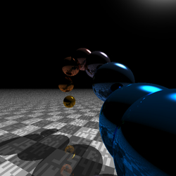

run
js
4
k intro
entries in the 2014
hearts
size: 1922 bytes
source:
preview
author:
@h_doxas
planets
size: 4034 bytes
source:
preview
author:
@g200kg
anpanman
size: 4029 bytes
source:
preview
author:
@h_doxas
mario shader
size: 2913 bytes
source:
preview
author:
@cx20
water drop
size: 2002 bytes
source:
preview
author:
@yuza_ja
GLSL Clock
size: 4052 bytes
source:
preview
author: k_ryo
dancing sphere

size: 3935 bytes
source:
preview
author:
@yuza_ja
doraemon
size: 3698 bytes
source:
preview
author:
@naotaro0123
Mario and Luigi
size: 2795 bytes
source:
preview
author:
@cx20
Volume
size: 2371 bytes
source:
preview
author:
@FMS_Cat
eclipse
size: 3062 bytes
source:
preview
author:
@h_doxas
share
Tweet
about
HTML + javaScript + glsl demo under 4k.
Let's enjoy =>
GLSL online editor